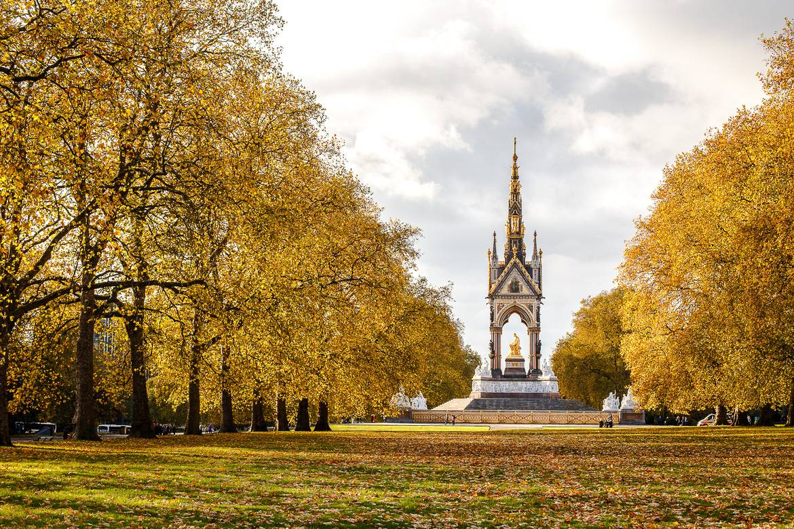
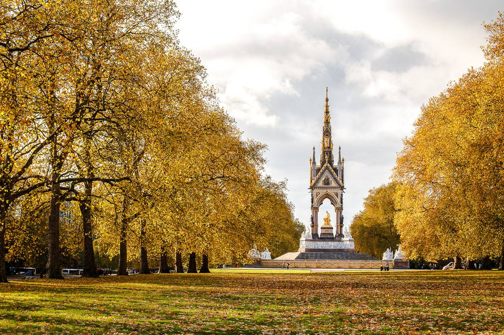
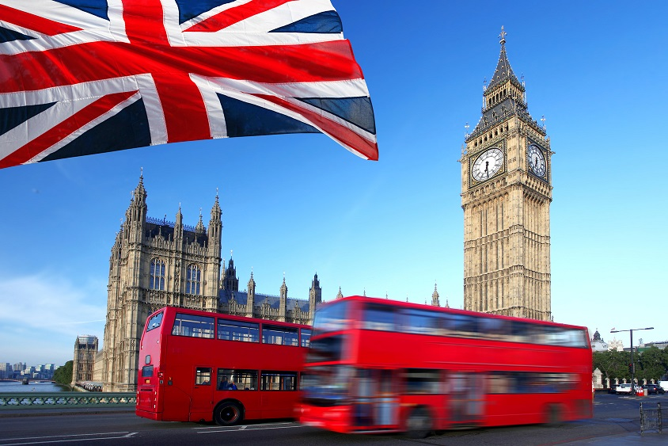
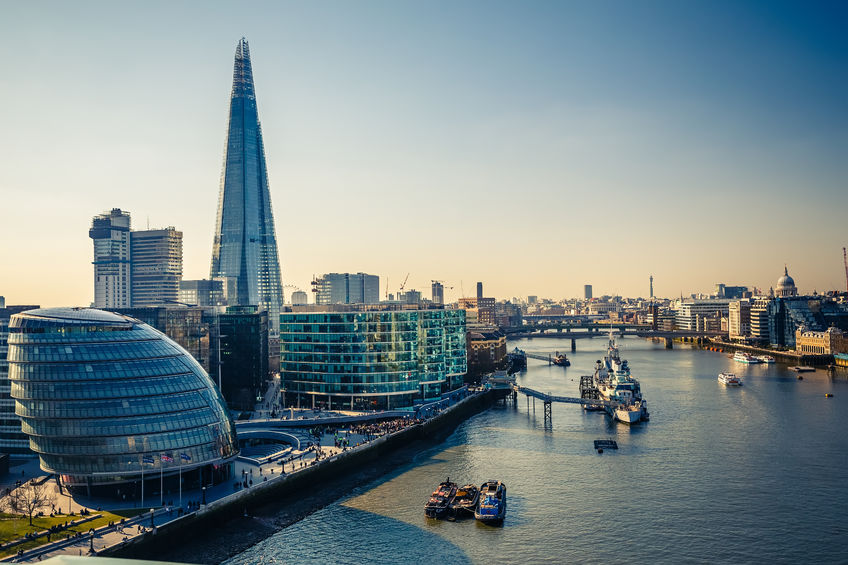
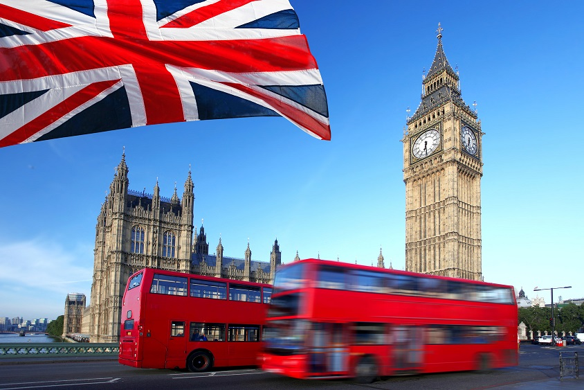
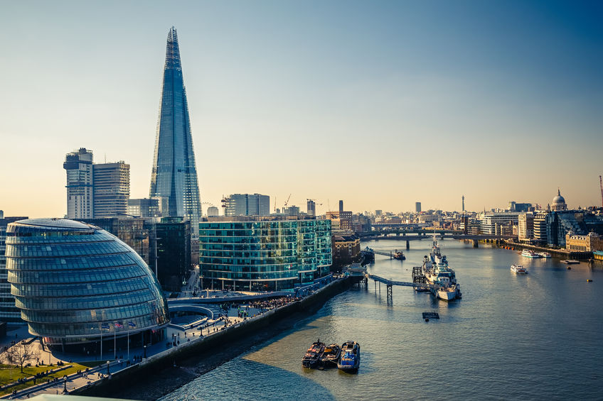

London
Willkommen in London
London zählt zu den Städten mit den meisten Besuchern weltweit. Mit ihrer reichen Geschichte und Architektur, ihrer Kunst und Kulturszene zieht diese Metropole jeden in ihren Bann.
London ist eine Stadt der Ideen und der Kreativität, eine unermüdliche Vorreiterin in Sachen Kunst und Kultur. Die Briten waren schon immer Querdenker und große Kritiker, und Londons Kreativszene glänzt nicht ohne Grund mit innovativem Theater, progressiver Kunst, Musik, Literatur und zukunftsweisendem Design. In schwierigen Zeiten spielt die Kultur eine besonders große Rolle, das Publikum ist anspruchsvoller geworden und die Olympiade wirft ihre Schatten voraus. Derzeit zieht London alle Register, um sein Publikum zu unterhalten!
London bietet viele Sehenswürdigkeiten (in West End, South Bank und City) und ein quirliges Großstadtleben, doch es locken auch viele Freiflächen und grüne Erholungsgebiete. Im Zentrum zieht es die meisten Besucher in die bedeutenden Museen und Galerien oder zu den berühmten Wahrzeichen. Hampstead Heath oder Greenwich Park sorgen dagegen für Erholung von den Massen und bieten Ausblicke auf die grünen Seiten der Stadt. Weiter draußen locken Kew Gardens, Richmond oder der Hampton Court Palace mit idyllischen Panoramen.
Neben der Landessprache Englisch beleben über 300 weitere Sprachen den Londoner Soundmix. Sie stehen für die vielen Kulturen, die mit unterschiedlichsten Speisen, Kleidungsund Musikstilen die Straßen prägen. Manchmal scheint es, als sei die ganze Welt in London zu Besuch. Ausstellungen wie die Sammlungen des British Museum und des Victoria & Albert Museum strotzen vor Vielfalt und die Märkte (z. B. in Borough und Exmouth) decken das gesamte Aromaspektrum ab. Der multikulturelle Mix macht London zur vielleicht internationalsten Stadt der Welt, doch irgendwie bleibt sie dabei immer urtypisch britisch.
Sehenswertes vor Ort
-
National Gallery
Die beeindruckende Sammlung vormoderner Kunst im Herzen Londons ist nicht nur eine der größten weltweit. Sie umfasst auch einige der erlesensten Kunstwerke aller Zeiten. Zu den Highlights gehören Werke von Leonardo da Vinci, Michelangelo, Gainsborough, Constable, Turner, Monet, Renoir und van Gogh. Für Kunstfreunde ist diese hervorragende Auswahl ein Muss. Die tollen Restaurants und Cafés des Hauses bilden das Sahnehäubchen auf dem unwiderstehlichen Kunstgenuss.
-
British Museum
Das British Museum in Bloomsbury ist die beliebteste Touristenattraktion Londons: Über 5 Mio. Besucher pilgern jährlich hierher. Die heiligen Hallen beherbergen eine so gewaltige Ansammlung von Kulturschätzen, Kunst und antiken Relikten, dass man hier ein Leben lang verbringen könnte, ohne dass es langweilig werden würde (und Eintritt müsste man dafür auch nicht bezahlen). Wer nicht ganz so viel Zeit hat, kann sich bei Führungen wie den Highlights Tours oder den eyeOpener Tours einen Überblick über die Reichtümer des Museums verschaffen.
-
Tate Modern
Das bei den Londonern (und vielleicht sogar weltweit) beliebteste Museum für moderne Kunst thront in bester Lage am Themse Ufer. Die Tate Modern im Gebäude des ehemaligen Bankside Kraftwerks ist ein eindrucksvolles Plädoyer für moderne Kunst, architektonische Innovation und für einen offenen Zugang zur Kultur für Jedermann. Der Eintritt zur Dauerausstellung ist frei, aber Besucher sollten auch einen Blick in die Turbinenhalle werfen, wo hervorragende kostenpflichtige Sonderausstellungen an den Grenzen des Kunstbegriffs rütteln und sogar Kunstkenner zum Nachdenken anregen.
-
Tower of London
Nur wenige historische Orte Großbritanniens sind so eng mit Legenden und Aberglaube verwoben wie die Mauern dieser mächtigen Festung. Der Tower, ganz sicher eine der bedeutendsten Sehenswürdigkeiten in London, lockt mit architektonischen Highlights, einem gigantischen Diamanten, einer umwerfenden Sammlung von Rüstungen und Waffen sowie Geschichte zum Anfassen auf Schritt und Tritt. Es gibt hier so viel zu sehen, dass Besucher früh kommen und mindestens einen halben Tag einplanen sollten. Besonders lohnenswert sind die faszinierenden und informativen Gratisführungen der prächtig gekleideten Torwächter („Beefeaters“).
-
Sportliches London
Ein Ticket für das FACup-Finale im Wembley-Stadion oder Plätze in der ersten Reihe beim 100-Meter-Finale der Männer im Olympiastadion sind schwer zu bekommen, aber es gibt noch viele andere Sportveranstaltungen in London: Ein Erstrundenspiel des WimbledonTurniers oder ein Besuch beim London-Marathon können genauso spannend sein. Und wer sich selbst sportlich betätigen will, schwingt sich einfach auf ein Barclays Bike oder joggt durch den Battersea Park. Einen Besuch wert ist auch der neue Olympic Park mit dem Olympiastadion, dem tollen Wassersportzentrum und einer topmodernen Radrennbahn.
-
Natural History Museum
Das kreativ gestaltete Natural History Museum ist nicht nur für Kinder ein Highlight. Der elektronische Tyrannosaurus Rex, das imposante DiplodocusSkelett, der zauberhafte Wildlife Garden, das hervorragende Darwin Centre und nicht zuletzt die Architektur des Hauses, die an englische Schauermärchen erinnert, beeindruckt auch Erwachsene. Bei den beliebten Übernachtungspartys können Kids direkt neben dem Diplodocus nächtigen. Im Winter vergnügen sich Schlittschuhläufer auf der glitzernden Eisbahn neben dem East Lawn.
-
National Maritime Museum
Ein Besuch im Maritime Museum ist eine spannende Lektion in englischer Seefahrtsgeschichte und eine gute Gelegenheit, den besonderen Charme des idyllischen Stadtteils Greenwich am Themse-Ufer kennenzulernen. Das Museum, das 2012 um einen neuen Flügel erweitert werden soll, präsentiert die dramatische und oft kriegerische Geschichte der britischen Seefahrt kurzweilig und fesselnd. Und auch die Kleinen werden mit zahlreichen Exponaten zum Anfassen und Mitmachen bei Laune gehalten.
-
London Eye
Schon beim Anflug auf Heathrow haben viele London-Besucher das Vergnügen, die Stadt von oben zu betrachten. Aber der Pilot wird wohl kaum eine Extrarunde über dem grandiosen Stadtpanorama drehen, das sich rund um das Londoner Riesenrad ausbreitet. Die Warteschlange bewegt sich zwar ebenso träge wie das Rad selbst (es gibt ein paar Tricks, um schneller dranzukommen), aber das steigert nur die Vorfreude auf die Fahrt in schwindelnde Höhen. Londons Schmuddelwetter kann das Erlebnis allerdings empfindlich schmälern. Wer nur ein paar Tage in der Stadt ist, sollte das Riesenrad auf jeden Fall ansteuern. Nur so kann man zuhause behaupten, alle Sehenswürdigkeiten gesehen zu haben.
-
Westminster Abbey
Fans der mittelalterlichen Kirchenarchitektur werden sich in der Ehrfurcht gebietenden Abteikirche, dem Krönungsort der englischen Monarchen, wie im siebten Himmel fühlen. Hier erzählt jeder Winkel eine Geschichte und kaum ein Baudenkmal in London ist von solcher Schönheit und so wunderbar erhalten wie diese Kapelle Heinrichs VII. Zu bewundern gibt’s hier außerdem die älteste Tür Großbritanniens, die Poet’s Corner (Dichterecke), den Krönungsstuhl, einen Kreuzgang aus dem 14. Jh., einen 900 Jahre alten Garten, königliche Sarkophage und vieles mehr. Da der Besucherandrang so massiv ist wie das Mauerwerk der Kirche, sollte man sich schon früh in die Schlange stellen.
-
Hyde Park & Kensington Gardens
Die Londoner Parks sind absolut einzigartig und bestens geeignet, um die Einheimischen bei ihren Lieblingsbeschäftigungen zu beobachten. Allein der Hyde Park ist eindrucksvolle 142 ha groß. Zählt man die Kensington Gardens hinzu, bleiben kaum Wünsche offen: jede Menge Platz für ausgedehnte Spaziergänge in zentraler Lage, ein königlicher Palast, viel viktorianischer Schnickschnack, Boote zum Paddeln, Open-Air-Konzerte, eine Kunstgalerie, majestätische Bäume und ein hübsches Granitdenkmal für Prinzessin Diana.
-
Shakespeare’s Globe
Der Blick auf die Bühne des originalgetreu rekonstruierten Globe Theatre ist ein unschlagbares London Erlebnis. Besonders authentisch wird’s mit einem Stehplatz zwischen den hartgesottenen groundlings, die wie zu elisabethani scher Zeit im offenen Innenhof schutzlos den Launen des Londoner Himmels ausgeliefert sind. Eine komfortablere Perspektive bieten die etwas teureren Sitzplätze auf den Emporen. Das Theater ist an Detailtreue nicht zu überbieten: Es wurde ohne Nägel nach traditioneller Zimmermannskunst mit englischen Eichenbalken und einem Strohdach errichtet. Neu hinzugekommen sind lediglich eine Sprinkleranlage und das Dröhnen der überfliegenden Flugzeuge.
-
Notting Hill Carnival
Jedes Jahr im August schmeißt das trendige Notting Hill eine ausgelassen und lautstarke Riesenparty. Das wahrscheinlich größte Straßenfest Europas ist ein quirliges und buntes dreitägiges Festival mit afrokaribischer Musik, Kultur und Küche. Alljährlich drängen sich über eine Million Besucher in den Straßen, um alle Hemmungen über Bord zu werfen und kräftig mitzufeiern. Das Festival ist ein Muss für alle, die das multikulturelle London und den dazugehörigen Musik-, Küchen-, Mode-, Sprach- und Kulturmix aus nächster Nähe erleben wollen.
-
Victoria & Albert Museum
Man könnte einen gesamten London-Aufenthalt nur in diesem riesigen Museum im eleganten South Kensington verbringen und es würde angesichts der gebotenen Vielfalt sicher nicht langweilig werden. Die größte Kunstgewerbesammlung der Welt bietet für jeden etwas: imposante Architektur des 19. Jhs., chinesische Keramik, japanische Rüstungen, islamische Textilien, Werke von Raffael, eine umwerfende Schmucksammlung, den revolutionären Sony-Walkman (und andere moderne Designklassiker) und vieles mehr.
-
Camden Town
Ein Abstecher in den trendigen Norden der Stadt gehört zum Pflichtprogramm aller London-Besucher, die nicht nur die zentralen Sehenswürdigkeiten besuchen wollen. Auch wenn Camden Market – eigentlich ein riesiger Zusammenschluss von vier Märkten – ohne Zweifel hektisch und touristisch ist, macht es einfach Spaß, hier herumzustöbern und sich dabei durch das Angebot der internationalen Imbissstände zu futtern. Die Nachteulen der Stadt wissen außerdem die fabelhafte Gastronomie, das pulsierende Nachtleben und die Kneipenkultur von Camden zu schätzen.
Entdecken Sie die Schönheit Londons
 



 


